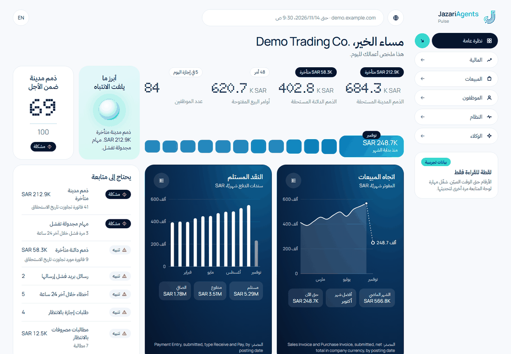

JazariAgents
دليل الاستخدام
تسعة وكلاء يبنون على منصّة Frappe ويشغّلون العمل فوقها. 335 قدرة في 22 مهارة، كل واحدة مرجعها صفحة رسمية من Frappe، ومعها لوحة متابعة لعملك في صفحة واحدة.
تسعة وكلاء يبنون على منصّة Frappe ويشغّلون العمل فوقها. 335 قدرة في 22 مهارة، كل واحدة مرجعها صفحة رسمية من Frappe، ومعها لوحة متابعة لعملك في صفحة واحدة.
قبل أي تعديل أو حذف تُحفظ نسخة كاملة محلياً في .frappe/snapshots/. إذا تعذّر حفظ النسخة، لا يتم التنفيذ. اطلب «استعد النسخة» في أي وقت.
بصراحة عن التراجع: الإعدادات تُستعاد تماماً. السجلات المحذوفة تعود كسجلات جديدة بمعرّفات جديدة، والروابط القديمة تبقى مكسورة. الفواتير المرحّلة والقيود المؤكدة والرواتب المصروفة والرسائل المرسلة لا يمكن التراجع عنها إطلاقاً؛ الحل هو إشعار دائن أو قيد عكسي، وهذا قرارك أنت.
لن يحذف الوكلاء أو يعدّلوا بالجملة شيئاً لم تطلبه تحديداً، ولن ينفّذوا تعليمات موجودة داخل بياناتك، ولن يكتبوا كلمة مرورك.
/plugin marketplace add JazariAgents/agents-for-frappe-erpnext/plugin install jazari-frappe-erpnext@jazari-agents/reload-plugins) لتُحمَّل المهارات.لا تريد استخدام المتجر؟ نزّل المستودع من github.com/JazariAgents/agents-for-frappe-erpnext وشغّل Claude Code بالأمر claude --plugin-dir <folder>/plugins/jazari-frappe-erpnext. وللتحقق من سلامة الملفات: claude plugin validate <folder>/plugins/jazari-frappe-erpnext.
.frappe/ في مساحة عملك. فيه تُحفظ النسخ الاحتياطية والسجلات وبيانات الاتصال، على جهازك أنت.يجرّب الوكلاء هذه الطرق بالترتيب ويخبرونك بالطريقة المستخدمة. وهي بدائل: أغلب العمل ممكن بأي منها.
| الطريقة | ما تحتاجه | تناسب |
|---|---|---|
| خادم MCP المضمّن في Frappe | إصدار Frappe 16.53 أو أحدث مع تفعيل Enable MCP (مفعّل تلقائياً في المواقع الجديدة). تضيف موقعك إلى Claude كموصّل وتسجّل الدخول من المتصفح. | العمل اليومي. لا يُلصق أي مفتاح في أي مكان، وكل إجراء يُنفَّذ بصلاحياتك أنت. |
| frappectl، أداة سطر الأوامر الرسمية من Frappe | مثبتة على جهازك ومسجّل الدخول بها عبر frappectl auth login <your site> --oauth --read-only. | التقارير والملفات والقراءات الكبيرة. للقراءة فقط ما لم تطلب غير ذلك. |
| مفتاح API والرمز السري | مفتاح يُنشأ من سجل المستخدم. يُحفظ في .frappe/credentials.txt على جهازك ولا يظهر في المحادثة. | أي موقع من الإصدار 15. الخيار البديل عند عدم توفر الطريقتين السابقتين. |
| من الواجهة | لا شيء. | بدون مفتاح، أو للأشياء القليلة التي لا تظهر إلا على الشاشة. الوكيل يرشد وأنت تنقر. |
| bench | طرفية على خادمك. | المواقع والتطبيقات والترحيل والنسخ الاحتياطي. وفي Frappe Cloud تغني لوحة التحكم عنها. |
قل «أرني لوحة المتابعة». يقرأ الوكيل موقعك ويبني Jazari Pulse: صفحة واحدة فيها ست شاشات.

كلما أنهى وكيل طلباً أضاف سطراً واحداً إلى الملف .frappe/activity.jsonl على جهازك: أي وكيل، وما المطلوب، وكيف انتهى (تم، تم جزئياً، فشل، أو رُفض)، وكم سجلاً تغيّر، وهل أُخذت نسخة احتياطية أولاً. شاشة «الوكلاء» في اللوحة تُبنى من هذا الملف: الطلبات في آخر 30 يوماً، وكيف انتهت، ونسبة أخذ النسخ الاحتياطية، وصف لكل وكيل. لا يُرسَل شيء من هذا الملف إلى أي مكان.
ابتداءً من Frappe 16.36 يستطيع الموقع تشغيل Automation Flows: عند إنشاء سجل أو تغييره أو حلول تاريخ، تُنفَّذ عدة خطوات بالترتيب، مع انتظار وتفريع، وبدون كتابة كود. اطلب ذلك من Urwah بكلماتك، مثلاً: «عند اعتماد أمر بيع يتجاوز 50,000 أسنده إلى مدير المبيعات وأرسل له بريداً، ثم ذكّره بعد يومين إذا بقي مفتوحاً».
لإيقاف أتمتة اطلب إيقافها. والأتمتة التي عملت مرة لا يمكن حذفها، بل إيقافها فقط.
الإعداد والتهيئة
يجهّز الموقع الجديد: الشركة والسنة المالية ودليل الحسابات والمستخدمون والاستضافة على Frappe Cloud.

الاستيراد والترحيل
ينقل البيانات بالجملة: ملفات إكسل والأرصدة الافتتاحية ودليل الحسابات والترحيل من نظام آخر، مع تجربة أولى دائماً.

بناء التطبيقات والتخصيص
يبني على المنصة نفسها: تطبيقات وأنواع مستندات وحقول وسير عمل وقوالب طباعة، إضافة إلى التصنيع وقوائم المواد.

المخزون
يعرف مكان كل صنف وقيمته: المستودعات وحركات المخزون والجرد والدفعات والأرقام التسلسلية والتقييم.

المحاسبة والضرائب والتقارير
المال: الفواتير والمدفوعات والقيود والتسويات والموازنات والأصول والضريبة والقروض وكل التقارير.

التسويق والموقع
الواجهة العامة: صفحات الموقع والمدونة والقوالب وتحسين الظهور والمتجر وقواعد التسعير والكوبونات والحملات.

العمليات والمشاريع
يبقي الطلبات تتحرك: عروض الأسعار وأوامر البيع والتجهيز والتسليم ونقاط البيع والمشاريع وساعات العمل.

العملاء والدعم والموظفون
كل من تتعامل معه الشركة: العملاء المحتملون والصفقات وتذاكر الدعم والموظفون والإجازات والرواتب والطلاب.

الربط والبنش والأتمتة
البنية التحتية: الاتصال بالموقع وواجهة REST والويب هوك والمهام الخلفية وأوامر bench والنسخ الاحتياطي والاستعادة.
الملفات الشخصية: الوكلاء · English
تأتي 1,612 صفحة من توثيق Frappe الرسمي في المجلد docs/: كل صفحة تقف خلف كل قدرة. يقرأ الوكلاء هذه الملفات ولا يعتمدون على الذاكرة، فينقلون كلام Frappe نفسه، ويعملون دون إنترنت، ويخبرونك بتاريخ آخر تحديث للصفحة إذا اختلف موقعك عنها. الصور غير مضمّنة، وحين تكون الخطوة صورة فقط يقول الوكيل ذلك.
أغلب القدرات ممكنة عبر الاتصال أو بالنقر في الواجهة. الأعداد التالية هي الطريقة التي وُثّقت بها كل قدرة.
| الوضع | متى يُستخدم | عدد القدرات |
|---|---|---|
| واجهة API | عبر خادم MCP أو frappectl أو مفتاح API — الأسرع والأدق | 90 |
| من الواجهة | بدون اتصال، أو لأشياء لا تتوفر إلا في الواجهة | 195 |
| أوامر bench | على خادمك: المواقع والتطبيقات والترحيل والنسخ الاحتياطي | 26 |
| إرشاد | يشرح Claude ويتحقق، وتنفّذ أنت | 24 |
يجهّز الموقع الجديد: الشركة والسنة المالية ودليل الحسابات والمستخدمون والاستضافة على Frappe Cloud.
المهارات: frappe-cloud, frappe-restore, frappe-setup, frappe-users-permissions
| ما يستطيع | الوضع | التراجع | المهارة |
|---|---|---|---|
| Add a custom app to a bench | من الواجهة | يُستعاد كما كان | frappe-cloud |
| Understand benches and bench groups | إرشاد | آمن — قراءة أو إنشاء | frappe-cloud |
| Create a bench group on Frappe Cloud | من الواجهة | آمن — قراءة أو إنشاء | frappe-cloud |
| Update a bench group | من الواجهة | يُستعاد كما كان | frappe-cloud |
| Manage billing and payments | من الواجهة | لا يمكن التراجع | frappe-cloud |
| Add a custom domain to a Frappe Cloud site | من الواجهة | يُستعاد كما كان | frappe-cloud |
| Install a marketplace app | من الواجهة | يُستعاد كما كان | frappe-cloud |
| Publish an app to the marketplace | من الواجهة | يُستعاد كما كان | frappe-cloud |
| Create a server | من الواجهة | آمن — قراءة أو إنشاء | frappe-cloud |
| Back up a Frappe Cloud site | من الواجهة | آمن — قراءة أو إنشاء | frappe-restore |
| Create a site on Frappe Cloud | من الواجهة | آمن — قراءة أو إنشاء | frappe-cloud |
| Move a site between benches or servers | من الواجهة | يُستعاد كما كان | frappe-cloud |
| Change a site plan | من الواجهة | يُستعاد كما كان | frappe-cloud |
| Connect to a bench over SSH | من الواجهة | آمن — قراءة أو إنشاء | frappe-cloud |
| Turn on two-factor authentication | من الواجهة | يُستعاد كما كان | frappe-users-permissions |
| Read the audit trail | من الواجهة | آمن — قراءة أو إنشاء | frappe-users-permissions |
| Hide fields with permission levels | من الواجهة | يُستعاد كما كان | frappe-users-permissions |
| Group roles into a role profile | من الواجهة | يُستعاد كما كان | frappe-users-permissions |
| Set role-based permissions | من الواجهة | يُستعاد كما كان | frappe-users-permissions |
| Understand permission types | إرشاد | آمن — قراءة أو إنشاء | frappe-users-permissions |
| Restrict a user to specific records | من الواجهة | يُستعاد كما كان | frappe-users-permissions |
| Add and manage users | من الواجهة | آمن — قراءة أو إنشاء | frappe-users-permissions |
| Set up the chart of accounts | من الواجهة | يُستعاد كما كان | frappe-setup |
| Set up a company | من الواجهة | آمن — قراءة أو إنشاء | frappe-setup |
| Configure currencies and exchange rates | من الواجهة | يُستعاد كما كان | frappe-setup |
| Connect an email account | من الواجهة | يُستعاد كما كان | frappe-setup |
| Set the fiscal year | من الواجهة | يُستعاد كما كان | frappe-setup |
| Run the ERPNext getting-started checklist | إرشاد | آمن — قراءة أو إنشاء | frappe-setup |
| Set global defaults | من الواجهة | يُستعاد كما كان | frappe-setup |
| Add a letter head | من الواجهة | يُستعاد كما كان | frappe-setup |
| Configure naming series | من الواجهة | يُستعاد كما كان | frappe-setup |
| Change system settings | من الواجهة | يُستعاد كما كان | frappe-setup |
ينقل البيانات بالجملة: ملفات إكسل والأرصدة الافتتاحية ودليل الحسابات والترحيل من نظام آخر، مع تجربة أولى دائماً.
المهارات: frappe-accounting, frappe-data-import, frappe-inventory
| ما يستطيع | الوضع | التراجع | المهارة |
|---|---|---|---|
| Enter opening balances | من الواجهة | يُستعاد كما كان | frappe-accounting |
| Import opening invoices | من الواجهة | يُستعاد كما كان | frappe-accounting |
| Import advances, payments and balances | من الواجهة | يُستعاد كما كان | frappe-data-import |
| Rename records in bulk | من الواجهة | يُستعاد كما كان | frappe-data-import |
| Update many records at once | من الواجهة | يُستعاد كما كان | frappe-data-import |
| Import a chart of accounts | من الواجهة | يُستعاد كما كان | frappe-data-import |
| Export records to a spreadsheet | من الواجهة | آمن — قراءة أو إنشاء | frappe-data-import |
| Import records from a spreadsheet | من الواجهة | يُستعاد كما كان | frappe-data-import |
| Prepare and map legacy data | إرشاد | آمن — قراءة أو إنشاء | frappe-data-import |
| Import accounting masters | من الواجهة | يُستعاد كما كان | frappe-data-import |
| Migrate from QuickBooks | من الواجهة | يُستعاد كما كان | frappe-data-import |
| Validate a migration | إرشاد | آمن — قراءة أو إنشاء | frappe-data-import |
| Load opening stock | من الواجهة | يُستعاد كما كان | frappe-inventory |
يبني على المنصة نفسها: تطبيقات وأنواع مستندات وحقول وسير عمل وقوالب طباعة، إضافة إلى التصنيع وقوائم المواد.
المهارات: frappe-app-builder, frappe-buying, frappe-inventory, frappe-manufacturing, frappe-website
| ما يستطيع | الوضع | التراجع | المهارة |
|---|---|---|---|
| Understand the framework architecture | إرشاد | آمن — قراءة أو إنشاء | frappe-app-builder |
| Bundle app assets | أوامر bench | آمن — قراءة أو إنشاء | frappe-app-builder |
| Create a new Frappe app | أوامر bench | آمن — قراءة أو إنشاء | frappe-app-builder |
| Query data with the database API | إرشاد | آمن — قراءة أو إنشاء | frappe-app-builder |
| Read an app's directory structure | إرشاد | آمن — قراءة أو إنشاء | frappe-app-builder |
| Work with documents in Python | إرشاد | آمن — قراءة أو إنشاء | frappe-app-builder |
| Wire app behaviour with hooks | إرشاد | آمن — قراءة أو إنشاء | frappe-app-builder |
| Render templates with the Jinja API | إرشاد | آمن — قراءة أو إنشاء | frappe-app-builder |
| Build portal and web pages | إرشاد | آمن — قراءة أو إنشاء | frappe-app-builder |
| Build safe queries with the query builder | إرشاد | آمن — قراءة أو إنشاء | frappe-app-builder |
| Create a new site for an app | أوامر bench | آمن — قراءة أو إنشاء | frappe-app-builder |
| Design an app screen in Frappe Studio | من الواجهة | يُستعاد كما كان | frappe-app-builder |
| Test an app before release | إرشاد | آمن — قراءة أو إنشاء | frappe-app-builder |
| Publish a web form | من الواجهة | آمن — قراءة أو إنشاء | frappe-app-builder |
| Run subcontracting | من الواجهة | يُستعاد كما كان | frappe-buying |
| Use a child table | من الواجهة | آمن — قراءة أو إنشاء | frappe-app-builder |
| Write controller methods | إرشاد | آمن — قراءة أو إنشاء | frappe-app-builder |
| Create a DocType | من الواجهة | آمن — قراءة أو إنشاء | frappe-app-builder |
| Turn on DocType features | من الواجهة | آمن — قراءة أو إنشاء | frappe-app-builder |
| Pick the right field type | من الواجهة | آمن — قراءة أو إنشاء | frappe-app-builder |
| Add a form script | إرشاد | آمن — قراءة أو إنشاء | frappe-app-builder |
| Set how documents are named | من الواجهة | آمن — قراءة أو إنشاء | frappe-app-builder |
| Choose the right kind of DocType | إرشاد | آمن — قراءة أو إنشاء | frappe-app-builder |
| Use virtual doc fields | إرشاد | آمن — قراءة أو إنشاء | frappe-app-builder |
| Build a bill of materials | واجهة API | يُستعاد كما كان | frappe-manufacturing |
| Design a BOM with the BOM creator | من الواجهة | لا يمكن التراجع | frappe-manufacturing |
| Update BOMs in bulk | من الواجهة | يُستعاد كما كان | frappe-manufacturing |
| Plan capacity | إرشاد | آمن — قراءة أو إنشاء | frappe-manufacturing |
| Record work on a job card | واجهة API | لا يمكن التراجع | frappe-manufacturing |
| Plan material requirements | إرشاد | آمن — قراءة أو إنشاء | frappe-manufacturing |
| Define operations and routing | من الواجهة | يُستعاد كما كان | frappe-manufacturing |
| Watch the plant floor | من الواجهة | آمن — قراءة أو إنشاء | frappe-manufacturing |
| Plan production | واجهة API | يُستعاد كما كان | frappe-manufacturing |
| Handle scrap and disassembly | من الواجهة | يُستعاد كما كان | frappe-manufacturing |
| Configure manufacturing settings | من الواجهة | يُستعاد كما كان | frappe-manufacturing |
| Run a work order | واجهة API | لا يمكن التراجع | frappe-manufacturing |
| Set up workstations | من الواجهة | يُستعاد كما كان | frappe-manufacturing |
| Add a client script | من الواجهة | يُستعاد كما كان | frappe-app-builder |
| Add a custom field | من الواجهة | يُستعاد كما كان | frappe-app-builder |
| Customize a form | من الواجهة | يُستعاد كما كان | frappe-app-builder |
| Build a print format | من الواجهة | يُستعاد كما كان | frappe-app-builder |
| Set up an approval workflow | من الواجهة | يُستعاد كما كان | frappe-app-builder |
| Define item attributes | من الواجهة | يُستعاد كما كان | frappe-inventory |
| Sell a product bundle | من الواجهة | يُستعاد كما كان | frappe-inventory |
| Create item variants | من الواجهة | يُستعاد كما كان | frappe-inventory |
| Build pages with Frappe Builder | من الواجهة | يُستعاد كما كان | frappe-website |
| Bind data to a Builder page | من الواجهة | يُستعاد كما كان | frappe-website |
يعرف مكان كل صنف وقيمته: المستودعات وحركات المخزون والجرد والدفعات والأرقام التسلسلية والتقييم.
المهارات: frappe-buying, frappe-inventory
| ما يستطيع | الوضع | التراجع | المهارة |
|---|---|---|---|
| Receive goods | واجهة API | لا يمكن التراجع | frappe-buying |
| Return goods to a supplier | واجهة API | لا يمكن التراجع | frappe-buying |
| Track batches | واجهة API | يُستعاد كما كان | frappe-inventory |
| Use the serial and batch bundle | واجهة API | يُستعاد كما كان | frappe-inventory |
| Close a stock period | من الواجهة | لا يمكن التراجع | frappe-inventory |
| Make a stock entry | واجهة API | لا يمكن التراجع | frappe-inventory |
| Create and manage items | واجهة API | يُستعاد كما كان | frappe-inventory |
| Group items | من الواجهة | يُستعاد كما كان | frappe-inventory |
| Read the stock ledger | من الواجهة | آمن — قراءة أو إنشاء | frappe-inventory |
| Check stock levels | من الواجهة | آمن — قراءة أو إنشاء | frappe-inventory |
| Set putaway rules | من الواجهة | يُستعاد كما كان | frappe-inventory |
| Inspect incoming quality | واجهة API | يُستعاد كما كان | frappe-inventory |
| Reconcile physical stock | واجهة API | لا يمكن التراجع | frappe-inventory |
| Reserve stock for an order | من الواجهة | يُستعاد كما كان | frappe-inventory |
| Track serial numbers | واجهة API | يُستعاد كما كان | frappe-inventory |
| Configure stock settings | من الواجهة | يُستعاد كما كان | frappe-inventory |
| Manage units of measure | من الواجهة | يُستعاد كما كان | frappe-inventory |
| Choose a valuation method | إرشاد | آمن — قراءة أو إنشاء | frappe-inventory |
| Set up warehouses | واجهة API | يُستعاد كما كان | frappe-inventory |
المال: الفواتير والمدفوعات والقيود والتسويات والموازنات والأصول والضريبة والقروض وكل التقارير.
المهارات: frappe-accounting, frappe-buying, frappe-inventory, frappe-learning, frappe-lending, frappe-projects, frappe-reports, frappe-selling
| ما يستطيع | الوضع | التراجع | المهارة |
|---|---|---|---|
| Manage fixed assets | واجهة API | يُستعاد كما كان | frappe-accounting |
| Reconcile the bank | من الواجهة | يُستعاد كما كان | frappe-accounting |
| Set and track a budget | من الواجهة | يُستعاد كما كان | frappe-accounting |
| Set up cost centers | من الواجهة | يُستعاد كما كان | frappe-accounting |
| Issue a credit note | واجهة API | لا يمكن التراجع | frappe-accounting |
| Issue a debit note | واجهة API | لا يمكن التراجع | frappe-accounting |
| Set up deferred revenue and expense | من الواجهة | يُستعاد كما كان | frappe-accounting |
| Run asset depreciation | من الواجهة | لا يمكن التراجع | frappe-accounting |
| Use accounting dimensions | من الواجهة | يُستعاد كما كان | frappe-accounting |
| Chase overdue invoices with dunning | واجهة API | لا يمكن التراجع | frappe-accounting |
| Freeze accounting entries | من الواجهة | يُستعاد كما كان | frappe-accounting |
| Post a journal entry | واجهة API | لا يمكن التراجع | frappe-accounting |
| Handle multi-currency accounting | إرشاد | آمن — قراءة أو إنشاء | frappe-accounting |
| Record a payment entry | واجهة API | لا يمكن التراجع | frappe-accounting |
| Reconcile payments against invoices | من الواجهة | يُستعاد كما كان | frappe-accounting |
| Send a payment request | واجهة API | لا يمكن التراجع | frappe-accounting |
| Set payment terms | من الواجهة | يُستعاد كما كان | frappe-accounting |
| Close an accounting period | من الواجهة | لا يمكن التراجع | frappe-accounting |
| Record a purchase invoice | واجهة API | لا يمكن التراجع | frappe-accounting |
| Raise a sales invoice | واجهة API | لا يمكن التراجع | frappe-accounting |
| Track shareholders and share transfers | من الواجهة | يُستعاد كما كان | frappe-accounting |
| Send a statement of accounts | من الواجهة | لا يمكن التراجع | frappe-accounting |
| Bill customers on a subscription | واجهة API | لا يمكن التراجع | frappe-accounting |
| Agree a blanket order | واجهة API | يُستعاد كما كان | frappe-buying |
| Add landed costs | واجهة API | يُستعاد كما كان | frappe-buying |
| Raise a material request | واجهة API | يُستعاد كما كان | frappe-buying |
| Place a purchase order | واجهة API | لا يمكن التراجع | frappe-buying |
| Send a request for quotation | واجهة API | لا يمكن التراجع | frappe-buying |
| Score suppliers | من الواجهة | يُستعاد كما كان | frappe-buying |
| Create and manage suppliers | واجهة API | يُستعاد كما كان | frappe-buying |
| Record a supplier quotation | واجهة API | يُستعاد كما كان | frappe-buying |
| Collect fees | من الواجهة | لا يمكن التراجع | frappe-learning |
| Chart a result in Insights | من الواجهة | يُستعاد كما كان | frappe-reports |
| Publish an Insights dashboard | من الواجهة | يُستعاد كما كان | frappe-reports |
| Connect a data source in Insights | من الواجهة | يُستعاد كما كان | frappe-reports |
| Use expressions in a query | من الواجهة | يُستعاد كما كان | frappe-reports |
| Set Insights permissions | من الواجهة | يُستعاد كما كان | frappe-reports |
| Write a query in Insights | من الواجهة | يُستعاد كما كان | frappe-reports |
| Share a dashboard and control access | من الواجهة | يُستعاد كما كان | frappe-reports |
| Charge for a course | من الواجهة | يُستعاد كما كان | frappe-learning |
| Process a loan application | من الواجهة | يُستعاد كما كان | frappe-lending |
| Disburse a loan | من الواجهة | لا يمكن التراجع | frappe-lending |
| Accrue interest | من الواجهة | لا يمكن التراجع | frappe-lending |
| Set up a loan product | من الواجهة | يُستعاد كما كان | frappe-lending |
| Record a loan repayment | من الواجهة | لا يمكن التراجع | frappe-lending |
| Manage loan security | من الواجهة | يُستعاد كما كان | frappe-lending |
| Set activity costs | من الواجهة | يُستعاد كما كان | frappe-projects |
| Bill a customer from a timesheet | واجهة API | لا يمكن التراجع | frappe-projects |
| Track project costing | من الواجهة | آمن — قراءة أو إنشاء | frappe-projects |
| Measure project profitability | من الواجهة | آمن — قراءة أو إنشاء | frappe-projects |
| Use the standard accounting reports | من الواجهة | آمن — قراءة أو إنشاء | frappe-reports |
| Produce a balance sheet | من الواجهة | آمن — قراءة أو إنشاء | frappe-reports |
| Produce a cash flow report | من الواجهة | آمن — قراءة أو إنشاء | frappe-reports |
| Build a custom report | من الواجهة | يُستعاد كما كان | frappe-reports |
| Build ERPNext dashboards | من الواجهة | يُستعاد كما كان | frappe-reports |
| Read the general ledger | من الواجهة | آمن — قراءة أو إنشاء | frappe-reports |
| Produce a profit and loss report | من الواجهة | آمن — قراءة أو إنشاء | frappe-reports |
| Age receivables and payables | من الواجهة | آمن — قراءة أو إنشاء | frappe-reports |
| Enforce a customer credit limit | من الواجهة | يُستعاد كما كان | frappe-selling |
| Consolidate POS invoices | من الواجهة | لا يمكن التراجع | frappe-selling |
| Run perpetual inventory | إرشاد | آمن — قراءة أو إنشاء | frappe-inventory |
| Use tax categories | من الواجهة | يُستعاد كما كان | frappe-accounting |
| Set item-level tax | من الواجهة | يُستعاد كما كان | frappe-accounting |
| Set up KSA VAT reporting | من الواجهة | يُستعاد كما كان | frappe-accounting |
| Create a purchase tax template | من الواجهة | يُستعاد كما كان | frappe-accounting |
| Apply tax rules automatically | من الواجهة | يُستعاد كما كان | frappe-accounting |
| Create a sales tax template | من الواجهة | يُستعاد كما كان | frappe-accounting |
| Set up taxes | من الواجهة | يُستعاد كما كان | frappe-accounting |
| Set up UAE VAT | من الواجهة | يُستعاد كما كان | frappe-accounting |
| Set up withholding tax | من الواجهة | يُستعاد كما كان | frappe-accounting |
الواجهة العامة: صفحات الموقع والمدونة والقوالب وتحسين الظهور والمتجر وقواعد التسعير والكوبونات والحملات.
المهارات: frappe-crm, frappe-selling, frappe-setup, frappe-website
| ما يستطيع | الوضع | التراجع | المهارة |
|---|---|---|---|
| Run a campaign | من الواجهة | يُستعاد كما كان | frappe-crm |
| Send an email campaign | من الواجهة | لا يمكن التراجع | frappe-crm |
| Send a newsletter | من الواجهة | لا يمكن التراجع | frappe-crm |
| Capture leads from a web form | من الواجهة | يُستعاد كما كان | frappe-crm |
| Issue coupon codes | من الواجهة | يُستعاد كما كان | frappe-selling |
| Set item prices | واجهة API | يُستعاد كما كان | frappe-selling |
| Run a loyalty program | من الواجهة | يُستعاد كما كان | frappe-selling |
| Maintain price lists | واجهة API | يُستعاد كما كان | frappe-selling |
| Apply a pricing rule | من الواجهة | يُستعاد كما كان | frappe-selling |
| Run a promotional scheme | من الواجهة | يُستعاد كما كان | frappe-selling |
| Create an email template | من الواجهة | يُستعاد كما كان | frappe-setup |
| Publish a blog post | من الواجهة | يُستعاد كما كان | frappe-website |
| Share files with Frappe Drive | من الواجهة | يُستعاد كما كان | frappe-website |
| Control file access in Drive | من الواجهة | يُستعاد كما كان | frappe-website |
| Share a Drive team folder | من الواجهة | يُستعاد كما كان | frappe-website |
| Set up SEO for the website | إرشاد | آمن — قراءة أو إنشاء | frappe-website |
| Run the shopping cart | من الواجهة | يُستعاد كما كان | frappe-website |
| Change the website theme | من الواجهة | يُستعاد كما كان | frappe-website |
| Publish a web page | من الواجهة | يُستعاد كما كان | frappe-website |
| Set up the website | من الواجهة | يُستعاد كما كان | frappe-website |
| Publish items to the shop | من الواجهة | يُستعاد كما كان | frappe-website |
| Publish a wiki space | من الواجهة | يُستعاد كما كان | frappe-website |
يبقي الطلبات تتحرك: عروض الأسعار وأوامر البيع والتجهيز والتسليم ونقاط البيع والمشاريع وساعات العمل.
المهارات: frappe-helpdesk, frappe-projects, frappe-reports, frappe-selling
| ما يستطيع | الوضع | التراجع | المهارة |
|---|---|---|---|
| Schedule maintenance visits | واجهة API | يُستعاد كما كان | frappe-helpdesk |
| Run a project | واجهة API | يُستعاد كما كان | frappe-projects |
| Manage tasks | واجهة API | يُستعاد كما كان | frappe-projects |
| Start from a project template | من الواجهة | يُستعاد كما كان | frappe-projects |
| Record timesheets | واجهة API | يُستعاد كما كان | frappe-projects |
| Analyse sales | من الواجهة | آمن — قراءة أو إنشاء | frappe-reports |
| Ship goods with a delivery note | واجهة API | لا يمكن التراجع | frappe-selling |
| Plan a delivery trip | واجهة API | يُستعاد كما كان | frappe-selling |
| Pack an order | واجهة API | يُستعاد كما كان | frappe-selling |
| Pick stock for an order | واجهة API | يُستعاد كما كان | frappe-selling |
| Sell at the point of sale | من الواجهة | لا يمكن التراجع | frappe-selling |
| Configure a POS profile | من الواجهة | يُستعاد كما كان | frappe-selling |
| Send a quotation | واجهة API | يُستعاد كما كان | frappe-selling |
| Process a sales return | واجهة API | لا يمكن التراجع | frappe-selling |
| Confirm a sales order | واجهة API | لا يمكن التراجع | frappe-selling |
| Track sales people and commission | من الواجهة | يُستعاد كما كان | frappe-selling |
| Book a shipment | واجهة API | لا يمكن التراجع | frappe-selling |
كل من تتعامل معه الشركة: العملاء المحتملون والصفقات وتذاكر الدعم والموظفون والإجازات والرواتب والطلاب.
المهارات: frappe-crm, frappe-helpdesk, frappe-hr, frappe-learning, frappe-selling
| ما يستطيع | الوضع | التراجع | المهارة |
|---|---|---|---|
| Move deals through the pipeline | واجهة API | يُستعاد كما كان | frappe-crm |
| Reply with email templates | من الواجهة | يُستعاد كما كان | frappe-crm |
| Capture leads | واجهة API | يُستعاد كما كان | frappe-crm |
| Keep notes on a deal | واجهة API | يُستعاد كما كان | frappe-crm |
| Work an opportunity in ERPNext | واجهة API | يُستعاد كما كان | frappe-crm |
| Track organizations | واجهة API | يُستعاد كما كان | frappe-crm |
| Set a CRM service level agreement | من الواجهة | يُستعاد كما كان | frappe-crm |
| Customize deal statuses | من الواجهة | يُستعاد كما كان | frappe-crm |
| Track CRM tasks | واجهة API | يُستعاد كما كان | frappe-crm |
| Invite your sales team | من الواجهة | يُستعاد كما كان | frappe-crm |
| Log calls against a deal | من الواجهة | يُستعاد كما كان | frappe-crm |
| Message a contact on WhatsApp | من الواجهة | لا يمكن التراجع | frappe-crm |
| Run assessments | من الواجهة | يُستعاد كما كان | frappe-learning |
| Set up programs and courses | من الواجهة | يُستعاد كما كان | frappe-learning |
| Enrol students | من الواجهة | يُستعاد كما كان | frappe-learning |
| Invite and manage agents | من الواجهة | يُستعاد كما كان | frappe-helpdesk |
| Connect a support email account | من الواجهة | يُستعاد كما كان | frappe-helpdesk |
| Track an issue in ERPNext | واجهة API | يُستعاد كما كان | frappe-helpdesk |
| Publish knowledge base articles | من الواجهة | يُستعاد كما كان | frappe-helpdesk |
| Set ticket priorities | من الواجهة | يُستعاد كما كان | frappe-helpdesk |
| Route tickets automatically | من الواجهة | يُستعاد كما كان | frappe-helpdesk |
| Answer faster with saved replies | من الواجهة | يُستعاد كما كان | frappe-helpdesk |
| Set service level agreements | من الواجهة | يُستعاد كما كان | frappe-helpdesk |
| Route tickets to teams | من الواجهة | يُستعاد كما كان | frappe-helpdesk |
| Handle support tickets | واجهة API | يُستعاد كما كان | frappe-helpdesk |
| Define ticket types | من الواجهة | يُستعاد كما كان | frappe-helpdesk |
| Handle a warranty claim | واجهة API | يُستعاد كما كان | frappe-helpdesk |
| Give an employee advance | واجهة API | يُستعاد كما كان | frappe-hr |
| Run an appraisal cycle | من الواجهة | يُستعاد كما كان | frappe-hr |
| Mark attendance | واجهة API | يُستعاد كما كان | frappe-hr |
| Automate attendance from check-ins | من الواجهة | يُستعاد كما كان | frappe-hr |
| Record employee check-ins | واجهة API | يُستعاد كما كان | frappe-hr |
| Create employee records | واجهة API | يُستعاد كما كان | frappe-hr |
| Process expense claims | واجهة API | يُستعاد كما كان | frappe-hr |
| Maintain the holiday list | من الواجهة | يُستعاد كما كان | frappe-hr |
| Track job applicants | واجهة API | يُستعاد كما كان | frappe-hr |
| Post a job opening | واجهة API | يُستعاد كما كان | frappe-hr |
| Allocate leave | واجهة API | يُستعاد كما كان | frappe-hr |
| Approve a leave application | واجهة API | يُستعاد كما كان | frappe-hr |
| Set a leave policy | من الواجهة | يُستعاد كما كان | frappe-hr |
| Define leave types | من الواجهة | يُستعاد كما كان | frappe-hr |
| Onboard a new employee | من الواجهة | يُستعاد كما كان | frappe-hr |
| Run payroll | واجهة API | لا يمكن التراجع | frappe-hr |
| Define salary components | من الواجهة | يُستعاد كما كان | frappe-hr |
| Issue salary slips | واجهة API | لا يمكن التراجع | frappe-hr |
| Build a salary structure | من الواجهة | يُستعاد كما كان | frappe-hr |
| Run employee separation | من الواجهة | يُستعاد كما كان | frappe-hr |
| Plan shifts | من الواجهة | يُستعاد كما كان | frappe-hr |
| Collect tax exemption declarations | من الواجهة | يُستعاد كما كان | frappe-hr |
| Set assignments | من الواجهة | يُستعاد كما كان | frappe-learning |
| Run a batch of learners | من الواجهة | يُستعاد كما كان | frappe-learning |
| Issue certificates | من الواجهة | لا يمكن التراجع | frappe-learning |
| Add chapters and lessons | من الواجهة | يُستعاد كما كان | frappe-learning |
| Create a course | من الواجهة | يُستعاد كما كان | frappe-learning |
| Host a live class | من الواجهة | يُستعاد كما كان | frappe-learning |
| Group courses into a program | من الواجهة | يُستعاد كما كان | frappe-learning |
| Assess learners with quizzes | من الواجهة | يُستعاد كما كان | frappe-learning |
| Create and manage customers | واجهة API | يُستعاد كما كان | frappe-selling |
| Group customers | من الواجهة | يُستعاد كما كان | frappe-selling |
| Organise territories | من الواجهة | يُستعاد كما كان | frappe-selling |
البنية التحتية: الاتصال بالموقع وواجهة REST والويب هوك والمهام الخلفية وأوامر bench والنسخ الاحتياطي والاستعادة.
المهارات: frappe-api, frappe-bench, frappe-cloud, frappe-connect, frappe-reports, frappe-restore, frappe-setup
| ما يستطيع | الوضع | التراجع | المهارة |
|---|---|---|---|
| Authenticate with OAuth 2 | واجهة API | آمن — قراءة أو إنشاء | frappe-connect |
| Log in with username and password | واجهة API | آمن — قراءة أو إنشاء | frappe-connect |
| Authenticate with API key and secret | واجهة API | آمن — قراءة أو إنشاء | frappe-connect |
| Queue and monitor background jobs | واجهة API | آمن — قراءة أو إنشاء | frappe-api |
| Test the site connection | واجهة API | آمن — قراءة أو إنشاء | frappe-connect |
| Cancel a submitted document | واجهة API | لا يمكن التراجع | frappe-api |
| Create a document through the API | واجهة API | آمن — قراءة أو إنشاء | frappe-api |
| Delete a document through the API | واجهة API | يعود كسجل جديد | frappe-api |
| Filter and select fields in a list call | واجهة API | آمن — قراءة أو إنشاء | frappe-api |
| List documents of any DocType | واجهة API | آمن — قراءة أو إنشاء | frappe-api |
| Read one document through the API | واجهة API | آمن — قراءة أو إنشاء | frappe-api |
| Submit a document through the API | واجهة API | لا يمكن التراجع | frappe-api |
| Update a document through the API | واجهة API | يُستعاد كما كان | frappe-api |
| Count records of a DocType | واجهة API | آمن — قراءة أو إنشاء | frappe-connect |
| Read DocType metadata to discover a site's schema | واجهة API | آمن — قراءة أو إنشاء | frappe-connect |
| Upload a file through the API | واجهة API | آمن — قراءة أو إنشاء | frappe-api |
| Generate API key and secret for a user | من الواجهة | آمن — قراءة أو إنشاء | frappe-connect |
| Call a whitelisted method on a document | واجهة API | آمن — قراءة أو إنشاء | frappe-api |
| Respect the site's rate limits | واجهة API | آمن — قراءة أو إنشاء | frappe-connect |
| Publish and listen to realtime events | واجهة API | آمن — قراءة أو إنشاء | frappe-api |
| Diagnose the scheduler | أوامر bench | آمن — قراءة أو إنشاء | frappe-api |
| Create a webhook on document events | من الواجهة | آمن — قراءة أو إنشاء | frappe-api |
| Secure a webhook with a shared secret | من الواجهة | آمن — قراءة أو إنشاء | frappe-api |
| Build an Automation Flow, switched off | واجهة API | آمن — قراءة أو إنشاء | frappe-api |
| Test-run an Automation Flow on a real record | واجهة API | آمن — قراءة أو إنشاء | frappe-api |
| Turn an Automation Flow on or off | واجهة API | لا يمكن التراجع | frappe-api |
| Read an Automation Flow's run history | واجهة API | آمن — قراءة أو إنشاء | frappe-api |
| Back up a site | أوامر bench | آمن — قراءة أو إنشاء | frappe-restore |
| Run bench CLI commands | أوامر bench | آمن — قراءة أو إنشاء | frappe-bench |
| Read and change site configuration | أوامر bench | يُستعاد كما كان | frappe-bench |
| Add a custom domain to a site | أوامر bench | يُستعاد كما كان | frappe-bench |
| Drop a site | أوامر bench | يعود كسجل جديد | frappe-bench |
| Execute a Python method on a site | أوامر bench | لا يمكن التراجع | frappe-bench |
| Run site-scoped framework commands | أوامر bench | آمن — قراءة أو إنشاء | frappe-bench |
| Configure HTTPS for a site | أوامر bench | يُستعاد كما كان | frappe-bench |
| List the apps installed on a site | أوامر bench | آمن — قراءة أو إنشاء | frappe-bench |
| Run migrations after an update | أوامر bench | يُستعاد كما كان | frappe-bench |
| Run several sites on one bench | أوامر bench | يُستعاد كما كان | frappe-bench |
| Create a site with bench new-site | أوامر bench | آمن — قراءة أو إنشاء | frappe-bench |
| Understand bench and the bench directory | أوامر bench | آمن — قراءة أو إنشاء | frappe-bench |
| Restore selected tables only | أوامر bench | يُستعاد كما كان | frappe-restore |
| Understand the bench Procfile | أوامر bench | آمن — قراءة أو إنشاء | frappe-bench |
| Set up a production environment | أوامر bench | يُستعاد كما كان | frappe-bench |
| Reinstall a site from scratch | أوامر bench | يعود كسجل جديد | frappe-bench |
| Restore a site from a backup | أوامر bench | يُستعاد كما كان | frappe-restore |
| Check background services | أوامر bench | آمن — قراءة أو إنشاء | frappe-bench |
| Show the current site configuration | أوامر bench | آمن — قراءة أو إنشاء | frappe-bench |
| Trim unused database tables | أوامر bench | يعود كسجل جديد | frappe-bench |
| Uninstall an app from a site | أوامر bench | يعود كسجل جديد | frappe-bench |
| Read site and bench logs | من الواجهة | آمن — قراءة أو إنشاء | frappe-cloud |
| Enable server scripts on a site | من الواجهة | يُستعاد كما كان | frappe-cloud |
| Email a report on a schedule | من الواجهة | يُستعاد كما كان | frappe-reports |
| Assign documents automatically | من الواجهة | يُستعاد كما كان | frappe-setup |
| Repeat a document on a schedule | من الواجهة | يُستعاد كما كان | frappe-setup |
| Send notifications on events | من الواجهة | يُستعاد كما كان | frappe-setup |
هذه المسارات مبنية على ترتيب المستندات الرسمية.
| المسار | الخطوات |
|---|---|
| Connect Claude to a Frappe site | Test the site connection → Authenticate with API key and secret → Read DocType metadata to discover a site's schema |
| Build a Frappe app from scratch | Create a new Frappe app → Create a new site for an app → Create a DocType → Pick the right field type → Write controller methods → Run migrations after an update |
| Set up a company and go live on ERPNext | Set up a company → Set the fiscal year → Set up the chart of accounts → Add and manage users → Import records from a spreadsheet → Enter opening balances |
| Run order to cash | Send a quotation → Confirm a sales order → Ship goods with a delivery note → Raise a sales invoice → Record a payment entry |
| Run procure to pay | Raise a material request → Place a purchase order → Receive goods → Record a purchase invoice → Record a payment entry |
| Close the month | Reconcile the bank → Reconcile payments against invoices → Produce a balance sheet → Produce a profit and loss report → Close an accounting period |
| Run monthly payroll | Mark attendance → Build a salary structure → Run payroll → Issue salary slips |
| Manufacture to order | Build a bill of materials → Plan production → Run a work order → Record work on a job card → Make a stock entry |
| Back up and restore a site | Back up a site → Restore a site from a backup → Back up a Frappe Cloud site |
| Load data in bulk from spreadsheets | Import records from a spreadsheet → Update many records at once → Import a chart of accounts → Load opening stock |
تصدر Frappe تحديثات كثيرة. تسجّل هذه الحزمة الإصدارات التي كُتبت صفحاتها لها والإصدارات التي فُحصت عليها. وعند الاتصال يقارن الوكيل ذلك بموقعك ويخبرك بوضوح إن كان موقعك أحدث، وما الذي تغيّر.
للحصول على أحدث نسخة من الحزمة، نفّذ هذين الأمرين في الطرفية:
claude plugin marketplace update jazari-agents
claude plugin update jazari-frappe-erpnext@jazari-agentsالإضافات من خارج متجر Anthropic لا تتحدّث تلقائياً إلا إذا فعّلت ذلك للمتجر من /plugin.
لم يُختبر:
غير موجود في ERPNext 16 أصلاً: أداة الترحيل من QuickBooks وإعداد ضريبة القيمة المضافة السعودية. تقول الأدلة ذلك بدل أن ترسلك للبحث عنهما.
حدود أخرى. تطبيقات Frappe الرسمية فقط: تطبيقات المتجر الخارجية تُعامَل بشكل عام عبر قراءة أنواع السجلات في موقعك، ويخبرك الوكيل حين يفعل ذلك. والصلاحيات صلاحيات موقعك لا صلاحيات الإضافة: إذا نقص مستخدمك دور، سمّاه الوكيل ولم يلتف عليه.
هل يمكن أن يحذف شيئاً بالخطأ؟ لا يحذف إلا ما طلبت حذفه تحديداً، بعد نسخة احتياطية مؤكدة وموافقة صريحة، ويخبرك أولاً هل يمكن التراجع عن الحذف.
هل أحتاج مفتاح API؟ لا. في Frappe 16.53 أو أحدث يمكنك الاتصال عبر خادم MCP المضمّن وتسجيل الدخول من المتصفح. المفتاح خيار بديل.
أين يُحفظ مفتاح API إن استخدمته؟ في .frappe/credentials.txt داخل مجلد عملك. لا في المحادثة، ولا في نسخة احتياطية، ولا في أي ملف قابل للمشاركة.
هل تغيّر لوحة المتابعة بياناتي؟ لا. هي تقرأ فقط.
رُفض مفتاحي برسالة «Access not allowed from this IP Address». المفتاح سليم. لمستخدمك قائمة Restrict IP، وهي تُطبَّق على مفاتيح API أيضاً منذ Frappe 16.33. أضف عنوانك في سجل المستخدم.
ماذا لو تغيّر Frappe بعد بناء هذه الحزمة؟ يتحقق الوكلاء من التسميات قبل النقر ويقولون بوضوح حين يختلف موقعك عن الحزمة. انظر قسم «التحديث».
كيف أعرف ما فعله؟ اسأل «ماذا فعلت؟» فيقرأ .frappe/tasklog.md و .frappe/audit.log. وشاشة «الوكلاء» في اللوحة تعرض السجل نفسه كصفحة.
هل هذا من صنع Frappe؟ لا. هو مشروع مستقل من Jazari Agents برخصة MIT. و Frappe و ERPNext علامتان تجاريتان لشركة Frappe Technologies.